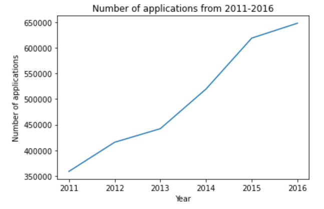
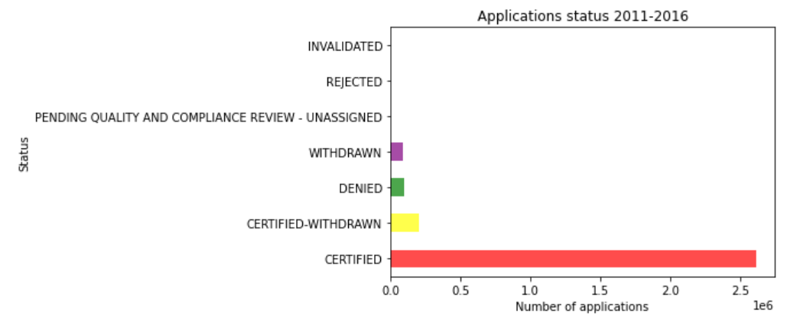
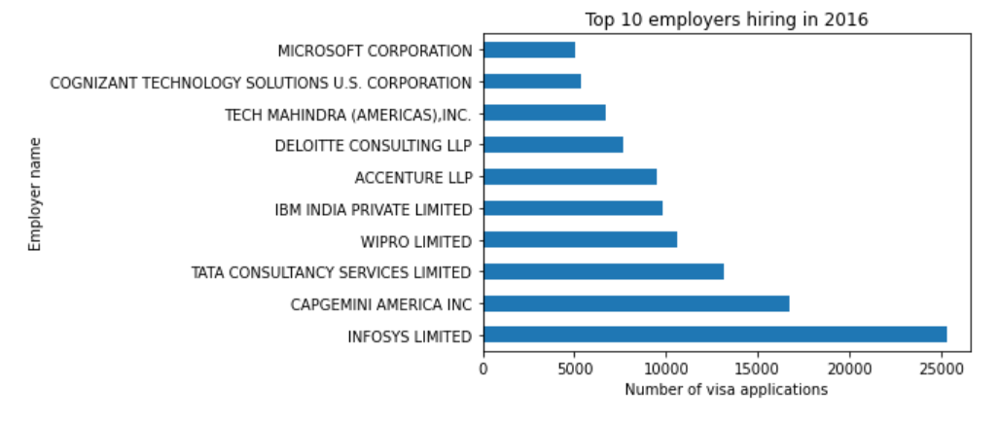
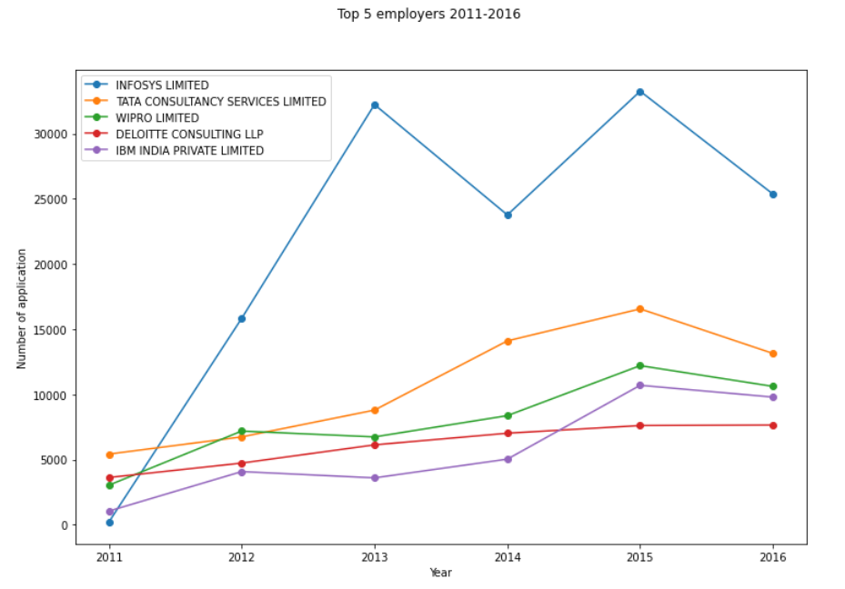
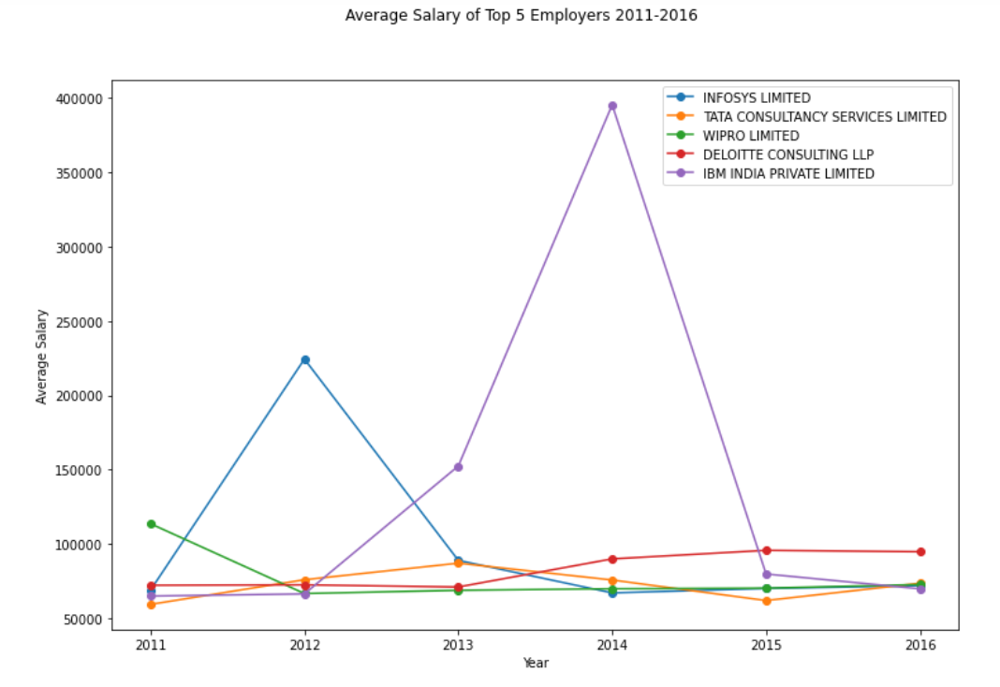
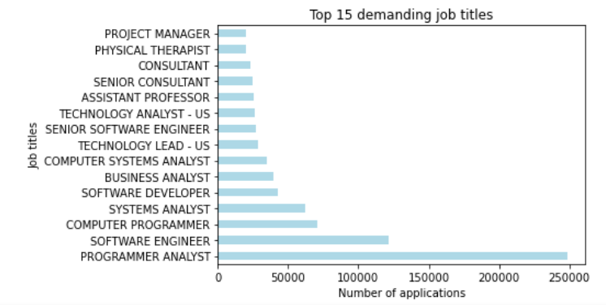

Exploratory Data Analysis
How many H1-B visa applications were filed during the period of 2011 through 2016?

It appears that more and more employers have hired immigrant workers and applied for their H1-B visa years over years, especially the high demand from 2013 - 2015.
How did the status of these applications look like?

It is a possitive result that out of 3 million applications over the course of 6 years, 87% applications were certified or approved. Total 10% applications were withdrawn (both certified and non-certified withdrawn) which could be due to various reasons. 3% applications were denied and we will explore further to see if we can identify a pattern.
Who were the most active employers in hiring and sponsoring H1-B visa for non-immigrant workers?

The graph of top 10 most hiring employers in the most recent year 2016 demonstrates that Infosys was the most active employer in hiring immigrant workers. Top 10 employers that are applying for H1-B visa mostly are tech and finance companies which typically require skilled and trained workforce.
We will select top 5 employers to analyze further their hiring activities from 2011-2016 as follows:

We can see from the graph that:
- Infosys has the most drastic increase in number of H1-B visa applications from 2011 to 2013. They hired significantly more non-immigrant workers than the other 4 companies.
- Tata came second highest in demand for H1-B visa workers
- Deloitte Consulting has what seems to be the most steady demand as the number of applications remained stable around 5000 cases.
- IBM India's demand trend started off slower than other companies but sharply increased from 2014-2015.
- In general, all companies' hiring activities slightly decreased in 2016.

- Wipro seems to be the market leader in 2011 at above 100k average salary offering.
- While Infosys has the most number of H1-B visa applications, their average offered salary were somewhat low and consistent with the market, except for the high peak in 2012.
- IBM India proved to be very competitive as they offered the highest average salary in 2014
What were the most demanding jobs for non-immigrant workers in the market from 2011-2016?

As we can see, bottom 10 bars represent most demandind jobs that H1-B visa applications were filed for, and these job titles are likely in tech field.